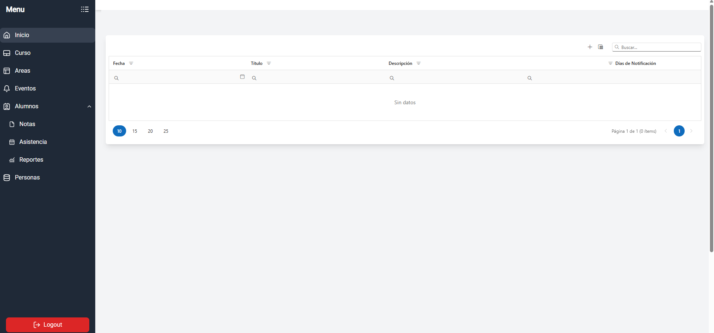
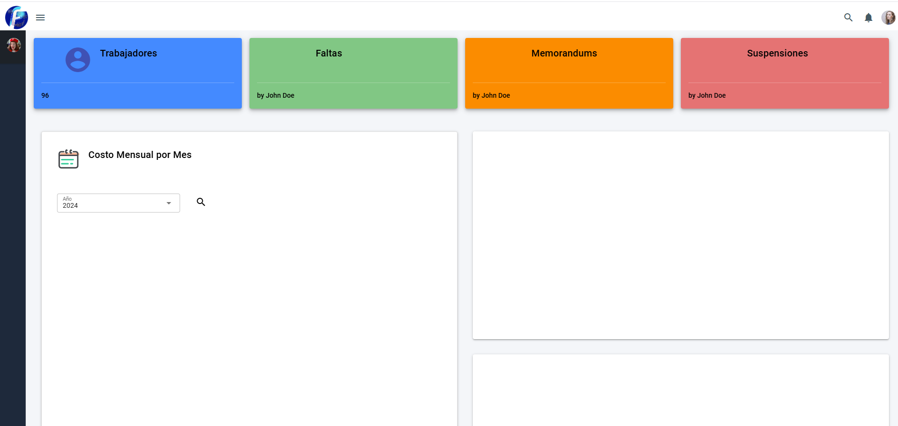
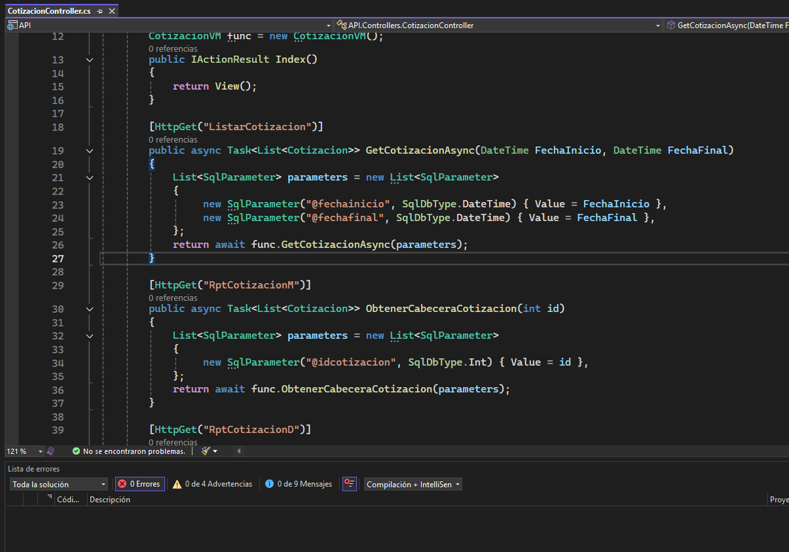

Entiendo el proceso y sus excepciones antes de escribir código.
PORTAFOLIO INTERACTIVO · LIMA, PERÚ
Software empresarial,
automatización e IA aplicada.
Diseño soluciones que conectan procesos, datos y modelos de inteligencia artificial. Mi trabajo reciente se concentra en automatizaciones con Python, chatbots contextuales, agentes con herramientas, APIs y sistemas auditables que convierten tareas repetitivas en flujos claros y controlados.
Automatización
Chatbots
Agentes IA
Python & APIs
Datos empresariales
PERFIL PROFESIONAL
Construyo sistemas que reducen fricción y convierten información en decisiones.
Mi experiencia combina desarrollo empresarial, bases de datos, integraciones y diseño de interfaces. Trabajo principalmente con C#, Vue, Python, FastAPI, PostgreSQL, SQL Server y Supabase, siempre buscando que la solución sea mantenible, segura y entendible por quienes realmente la usan.
En los últimos meses he orientado gran parte de mi trabajo a automatizaciones, chatbots y agentes con modelos de IA. Esto incluye diseñar flujos en Python, conectar APIs y bases de datos, preparar contexto para modelos, validar respuestas, registrar cada ejecución y limitar acciones sensibles. No me interesa agregar IA como adorno: la uso cuando puede ahorrar tiempo, reducir errores o mejorar el acceso a información compleja.
Auditoría, permisos, validación y trazabilidad antes de automatizar.
Interfaces claras, documentación y arquitectura preparada para crecer.

Sistema integralGESTIÓN EDUCATIVA
Plataforma de gestión para Colegio Sigma
Aplicación para administrar alumnos, aulas, cursos, personal, notificaciones y procesos académicos desde un entorno unificado.
- Paneles administrativos y reportes
- Reglas de negocio centralizadas
- Módulos integrados por rol

RECURSOS HUMANOS
Módulo de Talento Humano
Control de asistencia, tardanzas, memorandos, personal y procesos administrativos.

BACKEND EMPRESARIAL
API REST para ERP
Servicios para operaciones, reglas de negocio y reportes dinámicos sobre SQL Server.
¿Cuál es el estado del proceso?
Te resumo los datos y las próximas acciones.
AI
CHATBOTS CONTEXTUALES
Asistentes conectados a información empresarial
Diseño de chatbots que consultan documentos, APIs o bases de datos y responden con contexto controlado.
Entrada
→Agente
→Validación
→Acción
AUTOMATIZACIÓN
Flujos inteligentes con supervisión
Automatización de tareas repetitivas con validaciones, registros, reglas y puntos de aprobación humana.
SELECT consumo, periodo
FROM facturacion
WHERE suministro = ?;
Solo lectura · Auditado
AGENTES DE DATOS
Consultas SQL asistidas y auditables
Agentes que interpretan preguntas, generan consultas seguras y registran cada paso antes de acceder a datos.
ENFOQUE ACTUAL
Automatización, chatbots y agentes que trabajan con contexto real.
Desarrollo soluciones donde los modelos de IA forman parte de un flujo de ingeniería: reciben contexto, usan herramientas, consultan fuentes autorizadas, generan resultados estructurados y dejan evidencia de lo que hicieron. El objetivo es que la IA sea útil, verificable y segura para procesos empresariales.
Procesos que avanzan solos, pero no a ciegas
Orquestación de tareas, validaciones, notificaciones, archivos, consultas y aprobaciones humanas.
Python · APIs · Jobs · WebhooksConversaciones conectadas a conocimiento útil
Asistentes que recuperan información relevante, mantienen contexto y responden de forma consistente.
RAG · Embeddings · FastAPI · LLMModelos capaces de usar herramientas con límites
Agentes para consultar APIs, preparar reportes, analizar datos y coordinar tareas bajo reglas explícitas.
Tool calling · Policies · Structured outputLa capa que conecta modelos, datos y servicios
Backends ligeros, procesamiento de archivos, validación, integración y servicios preparados para producción.
Python · FastAPI · Pydantic · PostgreSQLIntegración
APIs, bases de datos, documentos y servicios internos.
Observabilidad
Logs, historial, métricas y seguimiento de cada ejecución.
Seguridad
Permisos, límites, validación y operaciones de solo lectura cuando corresponde.
Experiencia
Interfaces claras para que el usuario conserve el control.
ARQUITECTURA DE REFERENCIA
Un modelo no debería conectarse directamente a todo.
Prefiero una arquitectura por capas: entrada controlada, recuperación de contexto, razonamiento, herramientas autorizadas, validación y auditoría. Menos magia, más confianza.
01UsuarioPregunta o evento
→
02ContextoRAG, APIs, BD
→
03ModeloDecisión estructurada
→
04ControlValidación y logs
HERRAMIENTAS QUE UTILIZO
Tecnología elegida por el problema, no por la moda.
Backend empresarial
C#, .NET, APIs REST, JWT, DevExpress, servicios e integraciones.
IA y automatización
Python, FastAPI, Pydantic, procesamiento, agentes y tareas programadas.
Interfaces
Vue.js, React, React Native, JavaScript, TypeScript y Tailwind.
Datos
PostgreSQL, SQL Server, Supabase, PostGIS, modelado y optimización.

HABLEMOS
¿Tienes un proceso que podría ser más simple, rápido o inteligente?
Estoy disponible para proyectos remotos relacionados con desarrollo empresarial, automatización, chatbots, agentes con IA, integraciones y plataformas de datos.